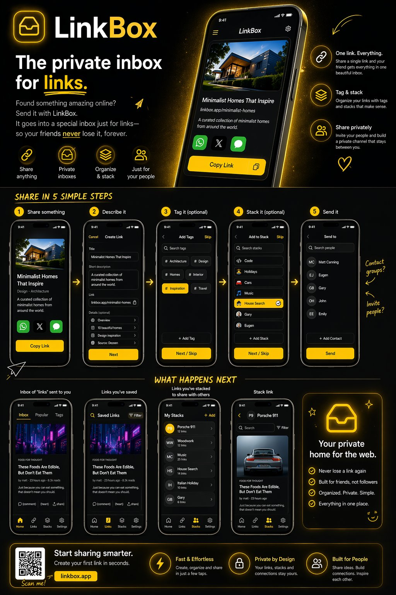

Concept
A past concept for a private, searchable home for saved links and recommendations that would otherwise disappear in busy conversations.
2022
A past concept for keeping saved links and recommendations easy to find after they had been shared.
A past concept for a private, searchable home for saved links and recommendations that would otherwise disappear in busy conversations.
It addressed the familiar problem of useful articles, products, places and videos being shared once and then becoming almost impossible to find again.
The experience imagined people saving links with context, organising them around interests and sharing curated collections with friends or groups.
Past idea from 2022.
